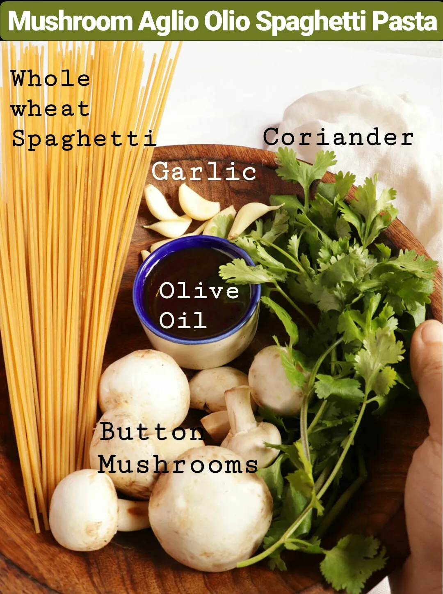

Mushroom Aglio Olio Spaghetti
A Light, Flavorful Pasta with Mushrooms & Herbs
Mushroom Aglio Olio Spaghetti is a simple yet incredibly satisfying pasta dish packed with rich garlic flavor and the earthy taste of sautéed mushrooms. Made with just a handful of ingredients, this recipe proves that delicious meals don’t always need complicated preparation.
The aroma of garlic slowly infused in olive oil gives this pasta its signature taste, while the mushrooms add a soft, juicy texture that pairs perfectly with spaghetti. Light, comforting, and full of flavor, this dish is ideal for quick lunches, lazy dinners, or whenever you want something easy and wholesome.
One of the best things about this recipe is how versatile it is. You can keep it classic with mushrooms or add vegetables like broccoli, zucchini, or bell peppers for extra color and texture.
- Prep Time: 10 mins
- Cook Time: 15 mins
- Total Time: 25 mins

Ingredients

- 250 grams whole wheat spaghetti
- 5 tablespoons olive oil
- 6–8 button mushrooms, washed and diced
- 6–8 garlic cloves, finely chopped
- Salt, to taste
- 1 teaspoon black pepper (optional)
- 1 teaspoon red chilli flakes (optional)
- 3 tablespoons chopped coriander or parsley (optional)
- Water, for boiling pasta
Step-by-Step Recipe
Step 1: Cook the Spaghetti
Bring a large pot of water to a boil and add a generous amount of salt. Add the spaghetti and cook until perfectly tender, following the package instructions or cooking for about 9–12 minutes. Drain the pasta and set aside.
Step 2: Prepare the Garlic Oil
Heat olive oil in a large frying pan over low heat. Add the chopped garlic and let it cook slowly so the oil absorbs all the rich garlic flavor without burning.
Step 3: Sauté the Mushrooms
Once the garlic turns lightly golden and aromatic, add the diced mushrooms to the pan. Cook on medium-low heat for about 5 minutes until the mushrooms soften and release their moisture.
Step 4: Toss the Pasta
Add the cooked spaghetti to the pan and gently toss it with the mushrooms and garlic oil. Let it cook together for about 2 minutes so the pasta absorbs all the flavors.
Step 5: Season and Finish
Sprinkle in black pepper, red chilli flakes, and extra salt if needed. Mix everything well and cook for another 1–2 minutes.
Step 6: Garnish and Serve
Finish with freshly chopped coriander or parsley and serve hot. Enjoy this light and flavorful Mushroom Aglio Olio Spaghetti on its own or with toasted garlic bread on the side.